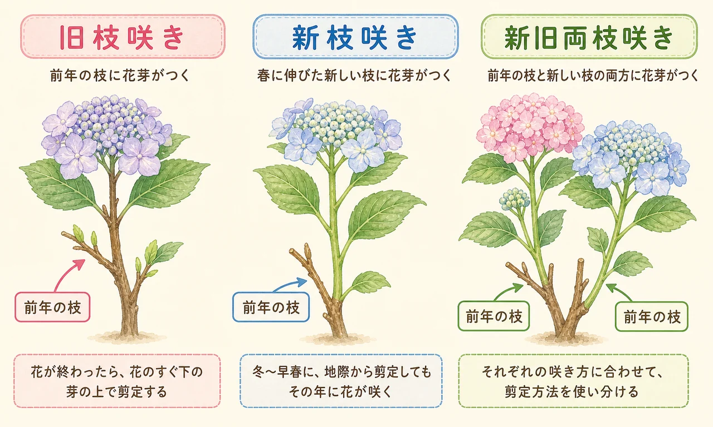
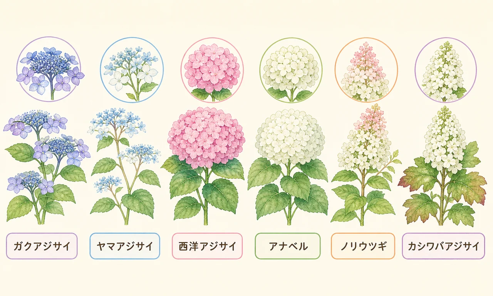
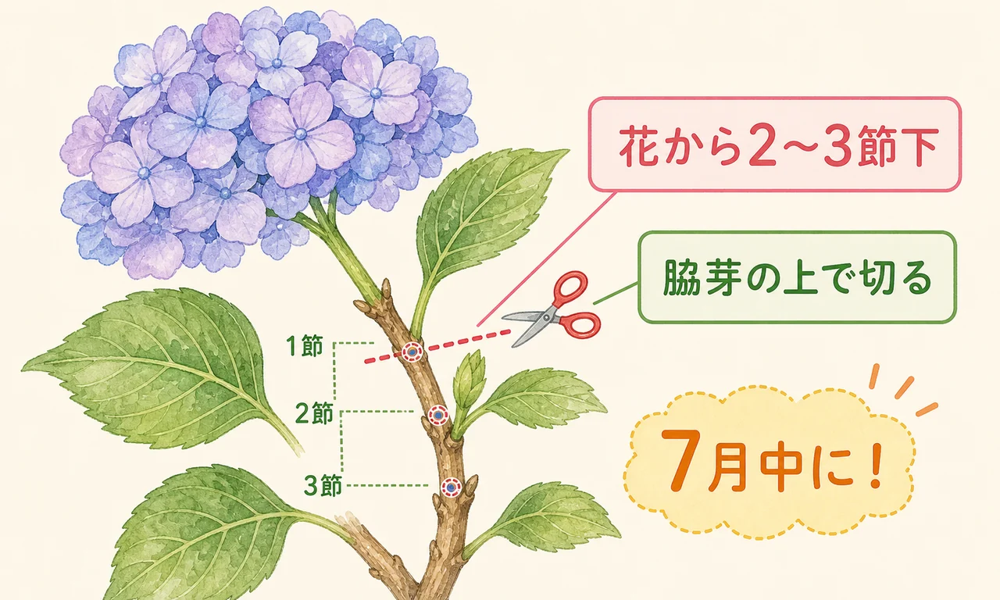
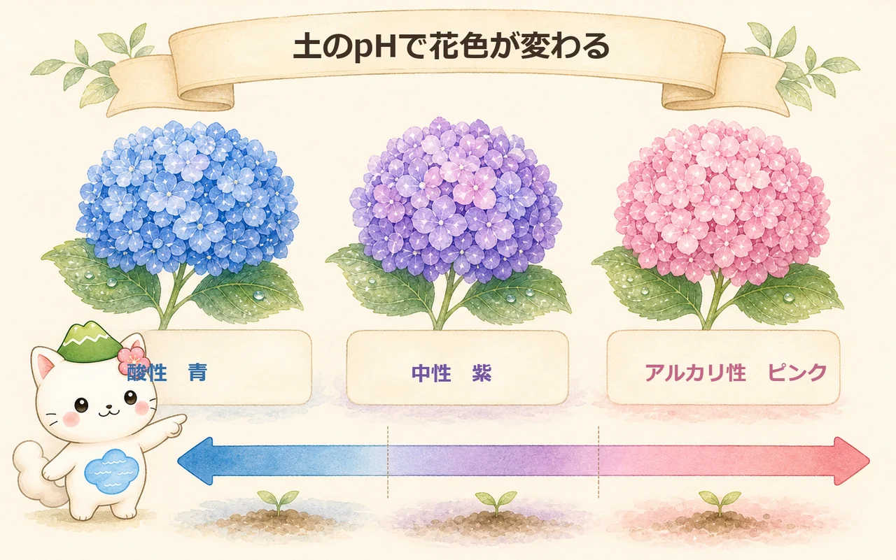

アジサイってどんな植物？
アジサイ（紫陽花）はアジサイ科アジサイ属の落葉低木。学名のHydrangea（ハイドランジア）は「水の器」という意味で、名前のとおり水が大好きです。日本の梅雨の気候にぴったり合い、初夏に大きな花を咲かせます。
品種改良がとても盛んで、花の形・色・大きさのバリエーションは驚くほど豊富。庭植えにも鉢植えにも向き、半日陰でも育つ丈夫さが魅力です。ただし、剪定の時期を間違えると翌年花が咲かないことがあるため、「自分のアジサイがどのタイプか」を知ることがいちばん大切です。

花のつき方で分ける3タイプ
アジサイの剪定で最も大事なのは、「花芽がどこにつくか」を知ること。これで3つのタイプに分かれ、剪定の時期と方法がまったく変わります。

- 旧枝咲き：今年伸びた枝に、翌年咲くための花芽がつく。花芽は夏の終わりにできるので、花後すぐ（7月中）に剪定しないと花芽を切ってしまう。
→ ガクアジサイ・ヤマアジサイ・カシワバアジサイなど。 - 新枝咲き：春に伸びたその年の新しい枝に花芽がつく。花芽は春以降にできるので、花後〜翌年3月までいつでも剪定できる。初心者向き。
→ アナベル（アメリカアジサイ）・ノリウツギなど。 - 新旧両枝咲き：旧枝にも新枝にも花がつくハイブリッドタイプ。剪定時期を気にしすぎなくてOK。
→ サマーメドレー・タフスタッフなど（近年の改良品種）。

「去年はきれいに咲いたのに、今年は葉っぱだけ……」という失敗のほとんどは、旧枝咲きなのに秋や冬に剪定してしまったケース。まず自分のアジサイがどのタイプか、これだけ覚えておけばもう安心だよ。
代表的なアジサイの種類
よく庭や公園で見かけるアジサイを、タイプ別に整理しました。

旧枝咲き
- ガクアジサイ：日本原産。中心に小さな両性花、まわりに大きな装飾花がつく「額縁」のような咲き方。半日陰でもよく育つ。
- ヤマアジサイ：山野に自生する繊細な姿。ガクアジサイより小ぶりで、日陰や湿り気のある場所を好む。
- 西洋アジサイ（ハイドランジア）：日本のアジサイがヨーロッパで品種改良されて逆輸入。手まり咲きが多く、花色のバリエーションが豊富。
- カシワバアジサイ：北米原産。ピラミッド型の白い花房と、柏の葉に似た大きな葉が特徴。秋に紅葉する。
新枝咲き
- アナベル（アメリカアジサイ）：真っ白な大きな手まり咲き。新枝咲きなので剪定で失敗しにくく、初心者に人気。ピンクアナベルもある。
- ノリウツギ（ピラミッドアジサイ）：円錐形の花房が特徴。新枝咲きで剪定自由。花色が白→ピンク→赤と秋まで変化するのが楽しい。
新旧両枝咲き
- サマーメドレー：側芽からも花が咲く新しいタイプ。二季咲き性で初夏と秋に咲く。剪定時期を選ばない。
- ラグランジア ブライダルシャワー：多くの芽から開花するため、どこで切っても翌年咲く。剪定がいちばんラクなアジサイ。
剪定① 旧枝咲き（7月中が勝負）
ガクアジサイ・ヤマアジサイ・西洋アジサイ・カシワバアジサイなど、旧枝咲きの剪定はタイミングがすべてです。

- いつ？：花が終わったらすぐ、遅くとも7月中に完了。花芽は夏の終わりにできるため、8月以降に切ると翌年の花芽ごと落とす。
- どこを切る？：花から2〜3節下の、脇芽（わきめ）が出ているすぐ上で切る。
- 花がない枝は？：花がつかなかった枝は切らずに残す（来年ここに咲く可能性がある）。
- 花が残っていても：花が完全に終わっていなくても、時期優先で切る。切った花は切り花として楽しめる。
カシワバアジサイは秋色（アンティークカラー）が人気だけど、色変わりを待ちすぎると剪定時期を逃しちゃう。一部の枝だけ残して秋色を楽しみ、残りは7月中に切る——という「半分作戦」がおすすめだよ。
剪定② 新枝咲き（いつでもOK）
アナベルとノリウツギは新枝咲き。春に伸びる新しい枝に花がつくので、剪定時期をあまり気にしなくて大丈夫です。
- 地面から2〜3節を残して大幅に切る
- 花の数は減るが、一つひとつが大きくなる
- 茎が太く短くなるので倒れにくい
- 積雪地では枝折れ防止に
- 花が終わったら花だけ切り、秋以降に充実した芽の上で軽く整える
- 花数が多くなるが、花は小さめ
- 株が大きくなりやすい
- 秋色の変化も楽しめる
どちらの方法でも、花後〜翌年3月（芽が動き出す前）の間に済ませれば大丈夫。ノリウツギは秋色が美しいので、秋までゆっくり観賞してから冬に剪定するのもおすすめです。
剪定③ 新旧両枝咲き
サマーメドレーやラグランジア ブライダルシャワーなどの新旧両枝咲きは、旧枝にも新枝にも花がつくため、剪定時期に神経質にならなくてOK。枯れ枝を取り除き、混みすぎた枝を整理する程度で、自然にコンパクトな姿を保てます。
「剪定が苦手」「つい時期を逃してしまう」という人は、これらの品種を選ぶと安心です。
花色の変え方（土のpH）
アジサイの花色は品種の特性に加えて、土のpH（酸性・アルカリ性）で変わることがあります。

- 酸性の土 → 青系：土中のアルミニウムが溶け出し、花に吸収される。日本の土は雨が多いため自然に酸性寄りで、放っておくと青くなりやすい。
- 中性の土 → 紫系：青とピンクの中間。
- アルカリ性の土 → ピンク系：アルミニウムが溶けにくくなる。ピンクにしたいときは苦土石灰などで土をアルカリ寄りに。
ただし、白いアジサイ（アナベルなど）はpHで色が変わりません。また、品種によっては色変わりしにくいものもあります。急に土を変えるより、植え替えや鉢植えで少しずつ調整するのが安全です。
青い花のつもりで植えたらピンクに咲いた！ ということもあるよ。その土地の性質次第だから、「思い通りにならないのもアジサイの楽しさ」くらいに構えると気がラクだよ。
日々の手入れ
水やり
学名のとおり、アジサイは水が大好き。地植えでもよほど日照りが続けばたっぷり与えます。鉢植えは乾燥しやすいので、土の表面が乾いたらたっぷり。夏場は朝夕の2回。底面給水鉢や深めの鉢にすると水切れしにくくなります。
肥料
- 地植え：1〜2月に寒肥（有機肥料）、花後の7〜8月にお礼肥。
- 鉢植え：3〜4月に窒素多めの肥料で芽出しを促し、開花期はリン酸・カリ主体に切り替え。
- 葉色が薄くなったら肥料切れのサイン。
置き場所・日当たり
半日以上の日照があれば育ちます。真夏の直射日光は葉焼けしやすいので、西日が強い場所は避けるか、遮光を。半日陰でも花はつきますが、日照が少ないと花つきはやや落ちます。
植え替え
鉢植えは根が回るので、1〜2年ごとに一回り大きな鉢へ。時期は花後か1月中旬〜3月中旬。水はけと保水性のよい培養土を使います。
冬越し
ほとんどのアジサイは寒さに強いですが、西洋アジサイの一部や鉢植えは寒冷地では保護が必要。軒下や室内に取り込み、土が完全に凍らないよう注意します。春先の遅霜にも気をつけましょう。
まとめ
アジサイは「花のつき方」で旧枝咲き・新枝咲き・新旧両枝咲きの3タイプに分かれ、剪定のルールがまったく違います。
- 旧枝咲き（ガクアジサイ・ヤマアジサイ・カシワバアジサイなど）→ 花後すぐ、7月中に花から2〜3節下で剪定。
- 新枝咲き（アナベル・ノリウツギ）→ 花後〜翌年3月まで自由。強剪定・弱剪定どちらもOK。
- 新旧両枝咲き（サマーメドレーなど）→ 時期を選ばず、枯れ枝整理だけでもOK。
花色は土のpH（酸性→青、アルカリ→ピンク）で変わることがあり、水やり・肥料・半日陰の環境で丈夫に育ちます。まずは「うちのアジサイはどのタイプ？」を確かめるところから始めてみましょう。剪定の基本を復習したくなったら剪定の基本へどうぞ。